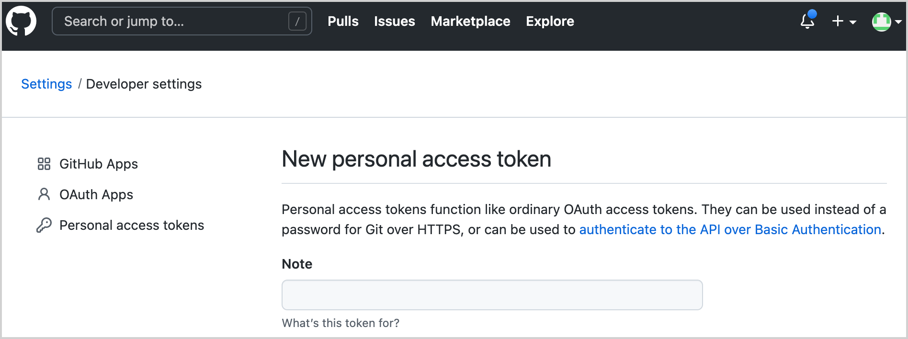
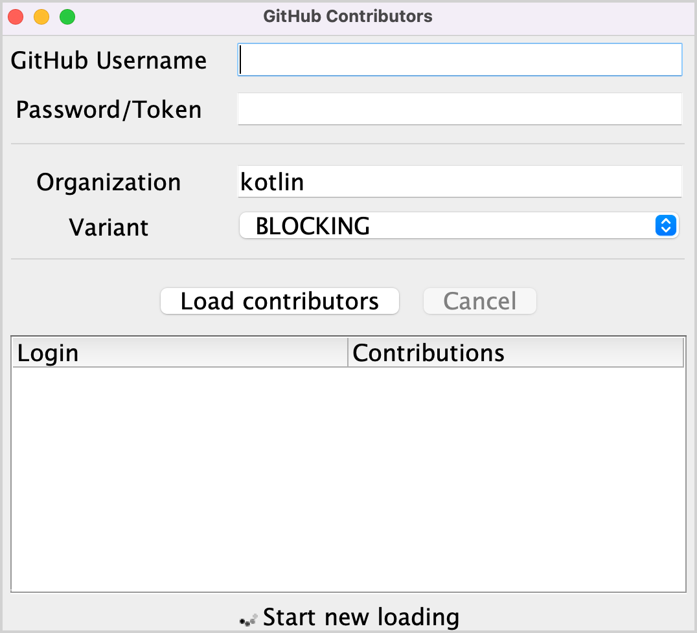
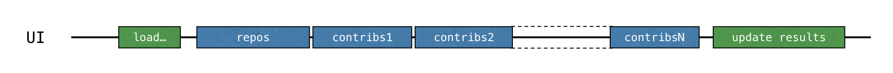
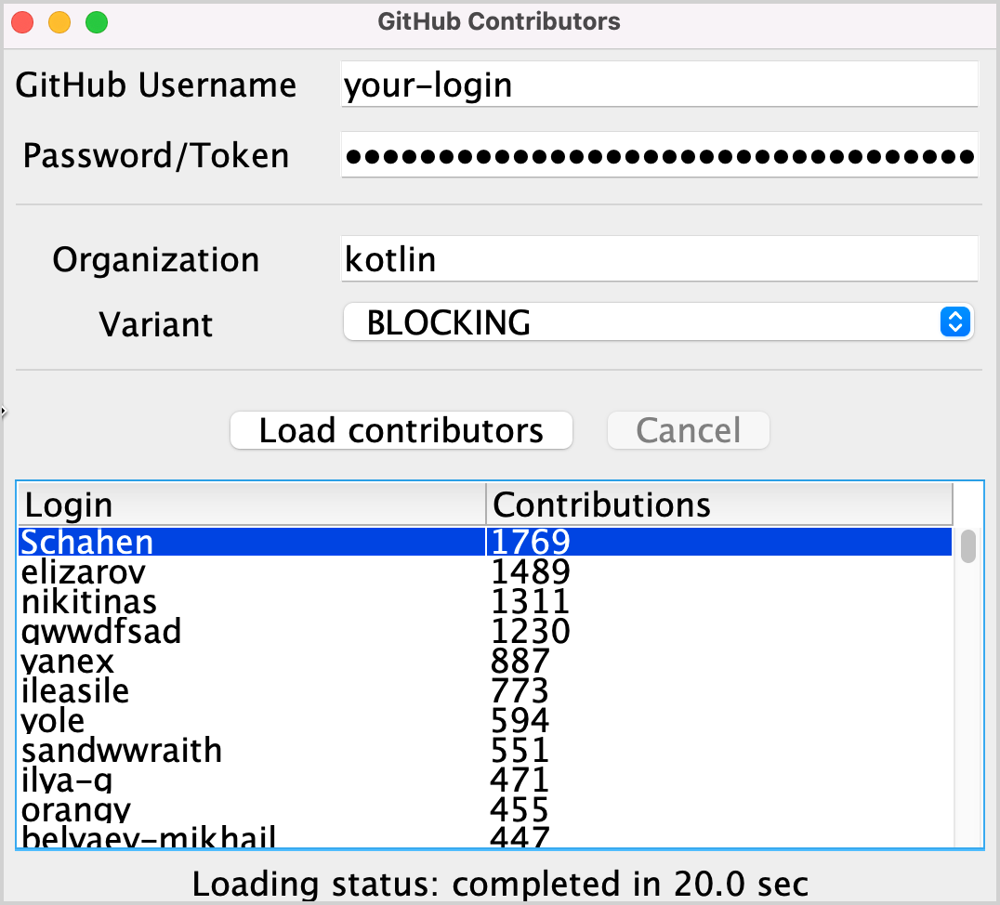
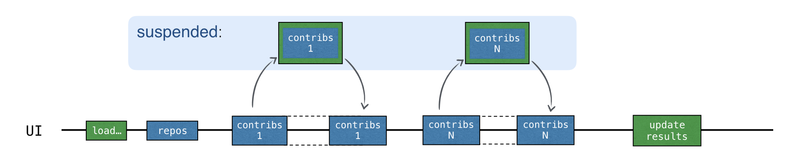
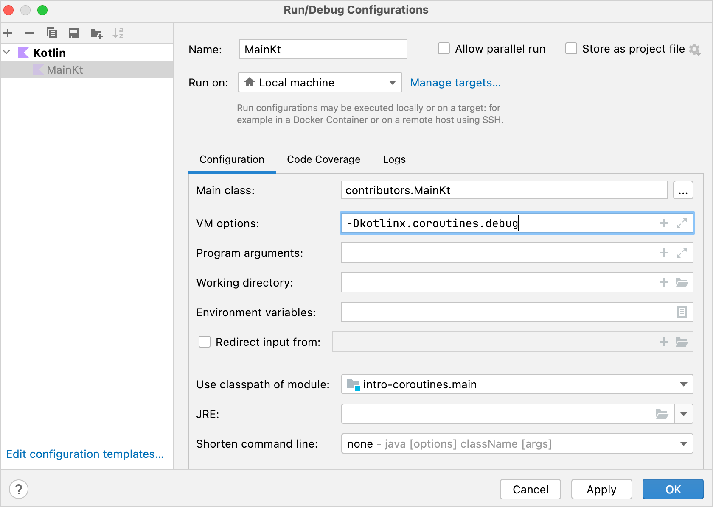

In this tutorial, you'll learn how to use coroutines in IntelliJ IDEA to perform network requests without blocking the underlying thread or callbacks.
You'll learn:
Why and how to use suspending functions to perform network requests.
How to send requests concurrently using coroutines.
How to share information between different coroutines using channels.
For network requests, you'll need the Retrofit library, but the approach shown in this tutorial works similarly for any other libraries that support coroutines.
Before you start
Download and install the latest version of IntelliJ IDEA.
-
Clone the project template by choosing Get from VCS on the Welcome screen or selecting File | New | Project from Version Control.
You can also clone it from the command line:
git clone https://github.com/kotlin-hands-on/intro-coroutines
Generate a GitHub developer token
You'll be using the GitHub API in your project. To get access, provide your GitHub account name and either a password or a token. If you have two-factor authentication enabled, a token will be enough.
Generate a new GitHub token to use the GitHub API with your account:
-
Specify the name of your token, for example,
coroutines-tutorial:
Do not select any scopes. Click Generate token at the bottom of the page.
Copy the generated token.
Run the code
The program loads the contributors for all of the repositories under the given organization (named "kotlin" by default). Later you'll add logic to sort the users by the number of their contributions.
-
Open the
src/contributors/main.ktfile and run themain()function. You'll see the following window:
If the font is too small, adjust it by changing the value of
setDefaultFontSize(18f)in themain()function. Provide your GitHub username and token (or password) in the corresponding fields.
Make sure that the BLOCKING option is selected in the Variant dropdown menu.
Click Load contributors. The UI should freeze for some time and then show the list of contributors.
Open the program output to ensure the data has been loaded. The list of contributors is logged after each successful request.
There are different ways of implementing this logic: by using blocking requests or callbacks. You'll compare these solutions with one that uses coroutines and see how channels can be used to share information between different coroutines.
Blocking requests
You will use the Retrofit library to perform HTTP requests to GitHub. It allows requesting the list of repositories under the given organization and the list of contributors for each repository:
interface GitHubService {
@GET("orgs/{org}/repos?per_page=100")
fun getOrgReposCall(
@Path("org") org: String
): Call<List<Repo>>
@GET("repos/{owner}/{repo}/contributors?per_page=100")
fun getRepoContributorsCall(
@Path("owner") owner: String,
@Path("repo") repo: String
): Call<List<User>>
}This API is used by the loadContributorsBlocking() function to fetch the list of contributors for the given organization.
-
Open
src/tasks/Request1Blocking.ktto see its implementation:fun loadContributorsBlocking( service: GitHubService, req: RequestData ): List<User> { val repos = service .getOrgReposCall(req.org) // #1 .execute() // #2 .also { logRepos(req, it) } // #3 .body() ?: emptyList() // #4 return repos.flatMap { repo -> service .getRepoContributorsCall(req.org, repo.name) // #1 .execute() // #2 .also { logUsers(repo, it) } // #3 .bodyList() // #4 }.aggregate() }At first, you get a list of the repositories under the given organization and store it in the
reposlist. Then for each repository, the list of contributors is requested, and all of the lists are merged into one final list of contributors.getOrgReposCall()andgetRepoContributorsCall()both return an instance of the*Callclass (#1). At this point, no request is sent.*Call.execute()is then invoked to perform the request (#2).execute()is a synchronous call that blocks the underlying thread.When you get the response, the result is logged by calling the specific
logRepos()andlogUsers()functions (#3). If the HTTP response contains an error, this error will be logged here.Finally, get the response's body, which contains the data you need. For this tutorial, you'll use an empty list as a result in case there is an error, and you'll log the corresponding error (
#4).
-
To avoid repeating
.body() ?: emptyList(), an extension functionbodyList()is declared:fun <T> Response<List<T>>.bodyList(): List<T> { return body() ?: emptyList() } -
Run the program again and take a look at the system output in IntelliJ IDEA. It should have something like this:
1770 [AWT-EventQueue-0] INFO Contributors - kotlin: loaded 40 repos 2025 [AWT-EventQueue-0] INFO Contributors - kotlin-examples: loaded 23 contributors 2229 [AWT-EventQueue-0] INFO Contributors - kotlin-koans: loaded 45 contributors ...The first item on each line is the number of milliseconds that have passed since the program started, then the thread name in square brackets. You can see from which thread the loading request is called.
The final item on each line is the actual message: how many repositories or contributors were loaded.
This log output demonstrates that all of the results were logged from the main thread. When you run the code with a BLOCKING option, the window freezes and doesn't react to input until the loading is finished. All of the requests are executed from the same thread as the one called
loadContributorsBlocking()is from, which is the main UI thread (in Swing, it's an AWT event dispatching thread). This main thread becomes blocked, and that's why the UI is frozen:
After the list of contributors has loaded, the result is updated.
-
In
src/contributors/Contributors.kt, find theloadContributors()function responsible for choosing how the contributors are loaded and look at howloadContributorsBlocking()is called:when (getSelectedVariant()) { BLOCKING -> { // Blocking UI thread val users = loadContributorsBlocking(service, req) updateResults(users, startTime) } }The
updateResults()call goes right after theloadContributorsBlocking()call.updateResults()updates the UI, so it must always be called from the UI thread.Since
loadContributorsBlocking()is also called from the UI thread, the UI thread becomes blocked and the UI is frozen.
Task 1
The first task helps you familiarize yourself with the task domain. Currently, each contributor's name is repeated several times, once for every project they have taken part in. Implement the aggregate() function combining the users so that each contributor is added only once. The User.contributions property should contain the total number of contributions of the given user to all the projects. The resulting list should be sorted in descending order according to the number of contributions.
Open src/tasks/Aggregation.kt and implement the List<User>.aggregate() function. Users should be sorted by the total number of their contributions.
The corresponding test file test/tasks/AggregationKtTest.kt shows an example of the expected result.
After implementing this task, the resulting list for the "kotlin" organization should be similar to the following:

Solution for task 1
To group users by login, use
groupBy(), which returns a map from a login to all occurrences of the user with this login in different repositories.For each map entry, count the total number of contributions for each user and create a new instance of the
Userclass by the given name and total of contributions.-
Sort the resulting list in descending order:
fun List<User>.aggregate(): List<User> = groupBy { it.login } .map { (login, group) -> User(login, group.sumOf { it.contributions }) } .sortedByDescending { it.contributions }
An alternative solution is to use the groupingBy() function instead of groupBy().
Callbacks
The previous solution works, but it blocks the thread and therefore freezes the UI. A traditional approach that avoids this is to use callbacks.
Instead of calling the code that should be invoked right after the operation is completed, you can extract it into a separate callback, often a lambda, and pass that lambda to the caller in order for it to be called later.
To make the UI responsive, you can either move the whole computation to a separate thread or switch to the Retrofit API which uses callbacks instead of blocking calls.
Use a background thread
-
Open
src/tasks/Request2Background.ktand see its implementation. First, the whole computation is moved to a different thread. Thethread()function starts a new thread:thread { loadContributorsBlocking(service, req) }Now that all of the loading has been moved to a separate thread, the main thread is free and can be occupied by other tasks:

-
The signature of the
loadContributorsBackground()function changes. It takes anupdateResults()callback as the last argument to call it after all the loading completes:fun loadContributorsBackground( service: GitHubService, req: RequestData, updateResults: (List<User>) -> Unit ) -
Now when the
loadContributorsBackground()is called, theupdateResults()call goes in the callback, not immediately afterward as it did before:loadContributorsBackground(service, req) { users -> SwingUtilities.invokeLater { updateResults(users, startTime) } }By calling
SwingUtilities.invokeLater, you ensure that theupdateResults()call, which updates the results, happens on the main UI thread (AWT event dispatching thread).
However, if you try to load the contributors via the BACKGROUND option, you can see that the list is updated but nothing changes in UI.
Task 2
Fix the loadContributorsBackground() function in src/tasks/Request2Background.kt so that the resulting list is shown in the UI.
Solution for task 2
If you try to load the contributors, you can see in the log that the contributors are loaded but the result isn't displayed. To fix this, call updateResults() on the resulting list of users:
thread {
updateResults(loadContributorsBlocking(service, req))
}Make sure to call the logic passed in the callback explicitly. Otherwise, nothing will happen.
Use the Retrofit callback API
In the previous solution, the whole loading logic is moved to the background thread, but that still isn't the best use of resources. All of the loading requests go sequentially and the thread is blocked while waiting for the loading result, while it could have been occupied by other tasks. Specifically, the thread could start loading another request to receive the entire result earlier.
Handling the data for each repository should then be divided into two parts: loading and processing the resulting response. The second processing part should be extracted into a callback.
The loading for each repository can then be started before the result for the previous repository is received (and the corresponding callback is called):

The Retrofit callback API can help achieve this. The Call.enqueue() function starts an HTTP request and takes a callback as an argument. In this callback, you need to specify what needs to be done after each request.
Open src/tasks/Request3Callbacks.kt and see the implementation of loadContributorsCallbacks() that uses this API:
fun loadContributorsCallbacks(
service: GitHubService, req: RequestData,
updateResults: (List<User>) -> Unit
) {
service.getOrgReposCall(req.org).onResponse { responseRepos -> // #1
logRepos(req, responseRepos)
val repos = responseRepos.bodyList()
val allUsers = mutableListOf<User>()
for (repo in repos) {
service.getRepoContributorsCall(req.org, repo.name)
.onResponse { responseUsers -> // #2
logUsers(repo, responseUsers)
val users = responseUsers.bodyList()
allUsers += users
}
}
}
// TODO: Why doesn't this code work? How to fix that?
updateResults(allUsers.aggregate())
}For convenience, this code fragment uses the
onResponse()extension function declared in the same file. It takes a lambda as an argument rather than an object expression.The logic for handling the responses is extracted into callbacks: the corresponding lambdas start at lines
#1and#2.
However, the provided solution doesn't work. If you run the program and load contributors by choosing the CALLBACKS option, you'll see that nothing is shown. However, the test from Request3CallbacksKtTest immediately returns the result that it successfully passed.
Think about why the given code doesn't work as expected and try to fix it, or see the solutions below.
Task 3 (optional)
Rewrite the code in the src/tasks/Request3Callbacks.kt file so that the loaded list of contributors is shown.
The first attempted solution for task 3
In the current solution, many requests are started concurrently, which decreases the total loading time. However, the result isn't loaded. This is because the updateResults() callback is called right after all of the loading requests are started, before the allUsers list has been filled with the data.
You could try to fix this with a change like the following:
val allUsers = mutableListOf<User>()
for ((index, repo) in repos.withIndex()) { // #1
service.getRepoContributorsCall(req.org, repo.name)
.onResponse { responseUsers ->
logUsers(repo, responseUsers)
val users = responseUsers.bodyList()
allUsers += users
if (index == repos.lastIndex) { // #2
updateResults(allUsers.aggregate())
}
}
}First, you iterate over the list of repos with an index (
#1).Then, from each callback, you check whether it's the last iteration (
#2).And if that's the case, the result is updated.
However, this code also fails to achieve our objective. Try to find the answer yourself, or see the solution below.
The second attempted solution for task 3
Since the loading requests are started concurrently, there's no guarantee that the result for the last one comes last. The results can come in any order.
Thus, if you compare the current index with the lastIndex as a condition for completion, you risk losing the results for some repos.
If the request that processes the last repo returns faster than some prior requests (which is likely to happen), all of the results for requests that take more time will be lost.
One way to fix this is to introduce an index and check whether all of the repositories have already been processed:
val allUsers = Collections.synchronizedList(mutableListOf<User>())
val numberOfProcessed = AtomicInteger()
for (repo in repos) {
service.getRepoContributorsCall(req.org, repo.name)
.onResponse { responseUsers ->
logUsers(repo, responseUsers)
val users = responseUsers.bodyList()
allUsers += users
if (numberOfProcessed.incrementAndGet() == repos.size) {
updateResults(allUsers.aggregate())
}
}
}This code uses a synchronized version of the list and AtomicInteger() because, in general, there's no guarantee that different callbacks that process getRepoContributors() requests will always be called from the same thread.
The third attempted solution for task 3
An even better solution is to use the CountDownLatch class. It stores a counter initialized with the number of repositories. This counter is decremented after processing each repository. It then waits until the latch is counted down to zero before updating the results:
val countDownLatch = CountDownLatch(repos.size)
for (repo in repos) {
service.getRepoContributorsCall(req.org, repo.name)
.onResponse { responseUsers ->
// processing repository
countDownLatch.countDown()
}
}
countDownLatch.await()
updateResults(allUsers.aggregate())The result is then updated from the main thread. This is more direct than delegating the logic to the child threads.
After reviewing these three attempts at a solution, you can see that writing correct code with callbacks is non-trivial and error-prone, especially when several underlying threads and synchronization occur.
Suspending functions
You can implement the same logic using suspending functions. Instead of returning Call<List<Repo>>, define the API call as a suspending function as follows:
interface GitHubService {
@GET("orgs/{org}/repos?per_page=100")
suspend fun getOrgRepos(
@Path("org") org: String
): List<Repo>
}getOrgRepos()is defined as asuspendfunction. When you use a suspending function to perform a request, the underlying thread isn't blocked. More details about how this works will come in later sections.getOrgRepos()returns the result directly instead of returning aCall. If the result is unsuccessful, an exception is thrown.
Alternatively, Retrofit allows returning the result wrapped in Response. In this case, the result body is provided, and it is possible to check for errors manually. This tutorial uses the versions that return Response.
In src/contributors/GitHubService.kt, add the following declarations to the GitHubService interface:
interface GitHubService {
// getOrgReposCall & getRepoContributorsCall declarations
@GET("orgs/{org}/repos?per_page=100")
suspend fun getOrgRepos(
@Path("org") org: String
): Response<List<Repo>>
@GET("repos/{owner}/{repo}/contributors?per_page=100")
suspend fun getRepoContributors(
@Path("owner") owner: String,
@Path("repo") repo: String
): Response<List<User>>
}Task 4
Your task is to change the code of the function that loads contributors to make use of two new suspending functions, getOrgRepos() and getRepoContributors(). The new loadContributorsSuspend() function is marked as suspend to use the new API.
Copy the implementation of
loadContributorsBlocking()that is defined insrc/tasks/Request1Blocking.ktinto theloadContributorsSuspend()that is defined insrc/tasks/Request4Suspend.kt.Modify the code so that the new suspending functions are used instead of the ones that return
Calls.Run the program by choosing the SUSPEND option and ensure that the UI is still responsive while the GitHub requests are performed.
Solution for task 4
Replace .getOrgReposCall(req.org).execute() with .getOrgRepos(req.org) and repeat the same replacement for the second "contributors" request:
suspend fun loadContributorsSuspend(service: GitHubService, req: RequestData): List<User> {
val repos = service
.getOrgRepos(req.org)
.also { logRepos(req, it) }
.bodyList()
return repos.flatMap { repo ->
service.getRepoContributors(req.org, repo.name)
.also { logUsers(repo, it) }
.bodyList()
}.aggregate()
}loadContributorsSuspend()should be defined as asuspendfunction.You no longer need to call
execute, which returned theResponsebefore, because now the API functions return theResponsedirectly. Note that this detail is specific to the Retrofit library. With other libraries, the API will be different, but the concept is the same.
Coroutines
The code with suspending functions looks similar to the "blocking" version. The major difference from the blocking version is that instead of blocking the thread, the coroutine is suspended:
block -> suspend
thread -> coroutineStarting a new coroutine
If you look at how loadContributorsSuspend() is used in src/contributors/Contributors.kt, you can see that it's called inside launch. launch is a library function that takes a lambda as an argument:
launch {
val users = loadContributorsSuspend(req)
updateResults(users, startTime)
}Here launch starts a new computation that is responsible for loading the data and showing the results. The computation is suspendable – when performing network requests, it is suspended and releases the underlying thread. When the network request returns the result, the computation is resumed.
Such a suspendable computation is called a coroutine. So, in this case, launch starts a new coroutine responsible for loading data and showing the results.
Coroutines run on top of threads and can be suspended. When a coroutine is suspended, the corresponding computation is paused, removed from the thread, and stored in memory. Meanwhile, the thread is free to be occupied by other tasks:

When the computation is ready to be continued, it is returned to a thread (not necessarily the same one).
In the loadContributorsSuspend() example, each "contributors" request now waits for the result using the suspension mechanism. First, the new request is sent. Then, while waiting for the response, the whole "load contributors" coroutine that was started by the launch function is suspended.
The coroutine resumes only after the corresponding response is received:

While the response is waiting to be received, the thread is free to be occupied by other tasks. The UI stays responsive, despite all the requests taking place on the main UI thread:
-
Run the program using the SUSPEND option. The log confirms that all of the requests are sent from the main UI thread:
2538 [AWT-EventQueue-0 @coroutine#1] INFO Contributors - kotlin: loaded 30 repos 2729 [AWT-EventQueue-0 @coroutine#1] INFO Contributors - ts2kt: loaded 11 contributors 3029 [AWT-EventQueue-0 @coroutine#1] INFO Contributors - kotlin-koans: loaded 45 contributors ... 11252 [AWT-EventQueue-0 @coroutine#1] INFO Contributors - kotlin-coroutines-workshop: loaded 1 contributors -
The log can show you which coroutine the corresponding code is running on. To enable it, open Run | Edit configurations and add the
-Dkotlinx.coroutines.debugVM option:
The coroutine name will be attached to the thread name while
main()is run with this option. You can also modify the template for running all of the Kotlin files and enable this option by default.
Now all of the code runs on one coroutine, the "load contributors" coroutine mentioned above, denoted as @coroutine#1. While waiting for the result, you shouldn't reuse the thread for sending other requests because the code is written sequentially. The new request is sent only when the previous result is received.
Suspending functions treat the thread fairly and don't block it for "waiting". However, this doesn't yet bring any concurrency into the picture.
Concurrency
Kotlin coroutines are much less resource-intensive than threads. Each time you want to start a new computation asynchronously, you can create a new coroutine instead.
To start a new coroutine, use one of the main coroutine builders: launch, async, or runBlocking. Different libraries can define additional coroutine builders.
async starts a new coroutine and returns a Deferred object. Deferred represents a concept known by other names such as Future or Promise. It stores a computation, but it defers the moment you get the final result; it promises the result sometime in the future.
The main difference between async and launch is that launch is used to start a computation that isn't expected to return a specific result. launch returns a Job that represents the coroutine. It is possible to wait until it completes by calling Job.join().
Deferred is a generic type that extends Job. An async call can return a Deferred<Int> or a Deferred<CustomType>, depending on what the lambda returns (the last expression inside the lambda is the result).
To get the result of a coroutine, you can call await() on the Deferred instance. While waiting for the result, the coroutine that this await() is called from is suspended:
import kotlinx.coroutines.*
fun main() = runBlocking {
val deferred: Deferred<Int> = async {
loadData()
}
println("waiting...")
println(deferred.await())
}
suspend fun loadData(): Int {
println("loading...")
delay(1000L)
println("loaded!")
return 42
}runBlocking is used as a bridge between regular and suspending functions, or between the blocking and non-blocking worlds. It works as an adaptor for starting the top-level main coroutine. It is intended primarily to be used in main() functions and tests.
If there is a list of deferred objects, you can call awaitAll() to await the results of all of them:
import kotlinx.coroutines.*
fun main() = runBlocking {
val deferreds: List<Deferred<Int>> = (1..3).map {
async {
delay(1000L * it)
println("Loading $it")
it
}
}
val sum = deferreds.awaitAll().sum()
println("$sum")
}When each "contributors" request is started in a new coroutine, all of the requests are started asynchronously. A new request can be sent before the result for the previous one is received:

The total loading time is approximately the same as in the CALLBACKS version, but it doesn't need any callbacks. What's more, async explicitly emphasizes which parts run concurrently in the code.
Task 5
In the Request5Concurrent.kt file, implement a loadContributorsConcurrent() function by using the previous loadContributorsSuspend() function.
Tip for task 5
You can only start a new coroutine inside a coroutine scope. Copy the content from loadContributorsSuspend() to the coroutineScope call so that you can call async functions there:
suspend fun loadContributorsConcurrent(
service: GitHubService,
req: RequestData
): List<User> = coroutineScope {
// ...
}Base your solution on the following scheme:
val deferreds: List<Deferred<List<User>>> = repos.map { repo ->
async {
// load contributors for each repo
}
}
deferreds.awaitAll() // List<List<User>>Solution for task 5
Wrap each "contributors" request with async to create as many coroutines as there are repositories. async returns Deferred<List<User>>. This is not an issue because creating new coroutines is not very resource-intensive, so you can create as many as you need.
-
You can no longer use
flatMapbecause themapresult is now a list ofDeferredobjects, not a list of lists.awaitAll()returnsList<List<User>>, so callflatten().aggregate()to get the result:suspend fun loadContributorsConcurrent( service: GitHubService, req: RequestData ): List<User> = coroutineScope { val repos = service .getOrgRepos(req.org) .also { logRepos(req, it) } .bodyList() val deferreds: List<Deferred<List<User>>> = repos.map { repo -> async { service.getRepoContributors(req.org, repo.name) .also { logUsers(repo, it) } .bodyList() } } deferreds.awaitAll().flatten().aggregate() } Run the code and check the log. All of the coroutines still run on the main UI thread because multithreading hasn't been employed yet, but you can already see the benefits of running coroutines concurrently.
-
To change this code to run "contributors" coroutines on different threads from the common thread pool, specify
Dispatchers.Defaultas the context argument for theasyncfunction:async(Dispatchers.Default) { }CoroutineDispatcherdetermines what thread or threads the corresponding coroutine should be run on. If you don't specify one as an argument,asyncwill use the dispatcher from the outer scope.Dispatchers.Defaultrepresents a shared pool of threads on the JVM. This pool provides a means for parallel execution. It consists of as many threads as there are CPU cores available, but it will still have two threads if there's only one core.
-
Modify the code in the
loadContributorsConcurrent()function to start new coroutines on different threads from the common thread pool. Also, add additional logging before sending the request:async(Dispatchers.Default) { log("starting loading for ${repo.name}") service.getRepoContributors(req.org, repo.name) .also { logUsers(repo, it) } .bodyList() } -
Run the program once again. In the log, you can see that each coroutine can be started on one thread from the thread pool and resumed on another:
1946 [DefaultDispatcher-worker-2 @coroutine#4] INFO Contributors - starting loading for kotlin-koans 1946 [DefaultDispatcher-worker-3 @coroutine#5] INFO Contributors - starting loading for dokka 1946 [DefaultDispatcher-worker-1 @coroutine#3] INFO Contributors - starting loading for ts2kt ... 2178 [DefaultDispatcher-worker-1 @coroutine#4] INFO Contributors - kotlin-koans: loaded 45 contributors 2569 [DefaultDispatcher-worker-1 @coroutine#5] INFO Contributors - dokka: loaded 36 contributors 2821 [DefaultDispatcher-worker-2 @coroutine#3] INFO Contributors - ts2kt: loaded 11 contributorsFor instance, in this log excerpt,
coroutine#4is started on theworker-2thread and continued on theworker-1thread.
In src/contributors/Contributors.kt, check the implementation of the CONCURRENT option:
-
To run the coroutine only on the main UI thread, specify
Dispatchers.Mainas an argument:launch(Dispatchers.Main) { updateResults() }If the main thread is busy when you start a new coroutine on it, the coroutine becomes suspended and scheduled for execution on this thread. The coroutine will only resume when the thread becomes free.
It's considered good practice to use the dispatcher from the outer scope rather than explicitly specifying it on each end-point. If you define
loadContributorsConcurrent()without passingDispatchers.Defaultas an argument, you can call this function in any context: with aDefaultdispatcher, with the main UI thread, or with a custom dispatcher.As you'll see later, when calling
loadContributorsConcurrent()from tests, you can call it in the context withTestDispatcher, which simplifies testing. That makes this solution much more flexible.
-
To specify the dispatcher on the caller side, apply the following change to the project while letting
loadContributorsConcurrentstart coroutines in the inherited context:launch(Dispatchers.Default) { val users = loadContributorsConcurrent(service, req) withContext(Dispatchers.Main) { updateResults(users, startTime) } }updateResults()should be called on the main UI thread, so you call it with the context ofDispatchers.Main.withContext()calls the given code with the specified coroutine context, is suspended until it completes, and returns the result. An alternative but more verbose way to express this would be to start a new coroutine and explicitly wait (by suspending) until it completes:launch(context) { ... }.join().
Run the code and ensure that the coroutines are executed on the threads from the thread pool.
Structured concurrency
The coroutine scope is responsible for the structure and parent-child relationships between different coroutines. New coroutines usually need to be started inside a scope.
The coroutine context stores additional technical information used to run a given coroutine, like the coroutine custom name, or the dispatcher specifying the threads the coroutine should be scheduled on.
When launch, async, or runBlocking are used to start a new coroutine, they automatically create the corresponding scope. All of these functions take a lambda with a receiver as an argument, and CoroutineScope is the implicit receiver type:
launch { /* this: CoroutineScope */ }New coroutines can only be started inside a scope.
launchandasyncare declared as extensions toCoroutineScope, so an implicit or explicit receiver must always be passed when you call them.The coroutine started by
runBlockingis the only exception becauserunBlockingis defined as a top-level function. But because it blocks the current thread, it's intended primarily to be used inmain()functions and tests as a bridge function.
A new coroutine inside runBlocking, launch, or async is started automatically inside the scope:
import kotlinx.coroutines.*
fun main() = runBlocking { /* this: CoroutineScope */
launch { /* ... */ }
// the same as:
this.launch { /* ... */ }
}When you call launch inside runBlocking, it's called as an extension to the implicit receiver of the CoroutineScope type. Alternatively, you could explicitly write this.launch.
The nested coroutine (started by launch in this example) can be considered as a child of the outer coroutine (started by runBlocking). This "parent-child" relationship works through scopes; the child coroutine is started from the scope corresponding to the parent coroutine.
It's possible to create a new scope without starting a new coroutine, by using the coroutineScope function. To start new coroutines in a structured way inside a suspend function without access to the outer scope, you can create a new coroutine scope that automatically becomes a child of the outer scope that this suspend function is called from. loadContributorsConcurrent() is a good example.
You can also start a new coroutine from the global scope using GlobalScope.async or GlobalScope.launch. This will create a top-level "independent" coroutine.
The mechanism behind the structure of the coroutines is called structured concurrency. It provides the following benefits over global scopes:
The scope is generally responsible for child coroutines, whose lifetime is attached to the lifetime of the scope.
The scope can automatically cancel child coroutines if something goes wrong or a user changes their mind and decides to revoke the operation.
The scope automatically waits for the completion of all child coroutines. Therefore, if the scope corresponds to a coroutine, the parent coroutine does not complete until all the coroutines launched in its scope have completed.
When using GlobalScope.async, there is no structure that binds several coroutines to a smaller scope. Coroutines started from the global scope are all independent – their lifetime is limited only by the lifetime of the whole application. It's possible to store a reference to the coroutine started from the global scope and wait for its completion or cancel it explicitly, but that won't happen automatically as it would with structured concurrency.
Canceling the loading of contributors
Create two versions of the function that loads the list of contributors. Compare how both versions behave when you try to cancel the parent coroutine. The first version will use coroutineScope to start all of the child coroutines, whereas the second will use GlobalScope.
-
In
Request5Concurrent.kt, add a 3-second delay to theloadContributorsConcurrent()function:suspend fun loadContributorsConcurrent( service: GitHubService, req: RequestData ): List<User> = coroutineScope { // ... async { log("starting loading for ${repo.name}") delay(3000) // load repo contributors } // ... }The delay affects all of the coroutines that send requests, so that there's enough time to cancel the loading after the coroutines are started but before the requests are sent.
Create the second version of the loading function: copy the implementation of
loadContributorsConcurrent()toloadContributorsNotCancellable()inRequest5NotCancellable.ktand then remove the creation of a newcoroutineScope.-
The
asynccalls now fail to resolve, so start them by usingGlobalScope.async:suspend fun loadContributorsNotCancellable( service: GitHubService, req: RequestData ): List<User> { // #1 // ... GlobalScope.async { // #2 log("starting loading for ${repo.name}") // load repo contributors } // ... return deferreds.awaitAll().flatten().aggregate() // #3 }The function now returns the result directly, not as the last expression inside the lambda (lines
#1and#3).All of the "contributors" coroutines are started inside the
GlobalScope, not as children of the coroutine scope (line#2).
Run the program and choose the CONCURRENT option to load the contributors.
-
Wait until all of the "contributors" coroutines are started, and then click Cancel. The log shows no new results, which means that all of the requests were indeed canceled:
2896 [AWT-EventQueue-0 @coroutine#1] INFO Contributors - kotlin: loaded 40 repos 2901 [DefaultDispatcher-worker-2 @coroutine#4] INFO Contributors - starting loading for kotlin-koans ... 2909 [DefaultDispatcher-worker-5 @coroutine#36] INFO Contributors - starting loading for mpp-example /* click on 'cancel' */ /* no requests are sent */ -
Repeat step 5, but this time choose the
NOT_CANCELLABLEoption:2570 [AWT-EventQueue-0 @coroutine#1] INFO Contributors - kotlin: loaded 30 repos 2579 [DefaultDispatcher-worker-1 @coroutine#4] INFO Contributors - starting loading for kotlin-koans ... 2586 [DefaultDispatcher-worker-6 @coroutine#36] INFO Contributors - starting loading for mpp-example /* click on 'cancel' */ /* but all the requests are still sent: */ 6402 [DefaultDispatcher-worker-5 @coroutine#4] INFO Contributors - kotlin-koans: loaded 45 contributors ... 9555 [DefaultDispatcher-worker-8 @coroutine#36] INFO Contributors - mpp-example: loaded 8 contributorsIn this case, no coroutines are canceled, and all the requests are still sent.
-
Check how the cancellation is triggered in the "contributors" program. When the Cancel button is clicked, the main "loading" coroutine is explicitly canceled and the child coroutines are canceled automatically:
interface Contributors { fun loadContributors() { // ... when (getSelectedVariant()) { CONCURRENT -> { launch { val users = loadContributorsConcurrent(service, req) updateResults(users, startTime) }.setUpCancellation() // #1 } } } private fun Job.setUpCancellation() { val loadingJob = this // #2 // cancel the loading job if the 'cancel' button was clicked: val listener = ActionListener { loadingJob.cancel() // #3 updateLoadingStatus(CANCELED) } // add a listener to the 'cancel' button: addCancelListener(listener) // update the status and remove the listener // after the loading job is completed } }
The launch function returns an instance of Job. Job stores a reference to the "loading coroutine", which loads all of the data and updates the results. You can call the setUpCancellation() extension function on it (line #1), passing an instance of Job as a receiver.
Another way you could express this would be to explicitly write:
val job = launch { }
job.setUpCancellation()For readability, you could refer to the
setUpCancellation()function receiver inside the function with the newloadingJobvariable (line#2).Then you could add a listener to the Cancel button so that when it's clicked, the
loadingJobis canceled (line#3).
With structured concurrency, you only need to cancel the parent coroutine and this automatically propagates cancellation to all of the child coroutines.
Using the outer scope's context
When you start new coroutines inside the given scope, it's much easier to ensure that all of them run with the same context. It is also much easier to replace the context if needed.
Now it's time to learn how using the dispatcher from the outer scope works. The new scope created by the coroutineScope or by the coroutine builders always inherits the context from the outer scope. In this case, the outer scope is the scope the suspend loadContributorsConcurrent() function was called from:
launch(Dispatchers.Default) { // outer scope
val users = loadContributorsConcurrent(service, req)
// ...
}All of the nested coroutines are automatically started with the inherited context. The dispatcher is a part of this context. That's why all of the coroutines started by async are started with the context of the default dispatcher:
suspend fun loadContributorsConcurrent(
service: GitHubService, req: RequestData
): List<User> = coroutineScope {
// this scope inherits the context from the outer scope
// ...
async { // nested coroutine started with the inherited context
// ...
}
// ...
}With structured concurrency, you can specify the major context elements (like dispatcher) once, when creating the top-level coroutine. All the nested coroutines then inherit the context and modify it only if needed.
Showing progress
Despite the information for some repositories being loaded rather quickly, the user only sees the resulting list after all of the data has been loaded. Until then, the loader icon runs showing the progress, but there's no information about the current state or what contributors are already loaded.
You can show the intermediate results earlier and display all of the contributors after loading the data for each of the repositories:

To implement this functionality, in the src/tasks/Request6Progress.kt, you'll need to pass the logic updating the UI as a callback, so that it's called on each intermediate state:
suspend fun loadContributorsProgress(
service: GitHubService,
req: RequestData,
updateResults: suspend (List<User>, completed: Boolean) -> Unit
) {
// loading the data
// calling `updateResults()` on intermediate states
}On the call site in Contributors.kt, the callback is passed to update the results from the Main thread for the PROGRESS option:
launch(Dispatchers.Default) {
loadContributorsProgress(service, req) { users, completed ->
withContext(Dispatchers.Main) {
updateResults(users, startTime, completed)
}
}
}The
updateResults()parameter is declared assuspendinloadContributorsProgress(). It's necessary to callwithContext, which is asuspendfunction inside the corresponding lambda argument.updateResults()callback takes an additional Boolean parameter as an argument specifying whether the loading has completed and the results are final.
Task 6
In the Request6Progress.kt file, implement the loadContributorsProgress() function that shows the intermediate progress. Base it on the loadContributorsSuspend() function from Request4Suspend.kt.
Use a simple version without concurrency; you'll add it later in the next section.
The intermediate list of contributors should be shown in an "aggregated" state, not just the list of users loaded for each repository.
The total number of contributions for each user should be increased when the data for each new repository is loaded.
Solution for task 6
To store the intermediate list of loaded contributors in the "aggregated" state, define an allUsers variable which stores the list of users, and then update it after contributors for each new repository are loaded:
suspend fun loadContributorsProgress(
service: GitHubService,
req: RequestData,
updateResults: suspend (List<User>, completed: Boolean) -> Unit
) {
val repos = service
.getOrgRepos(req.org)
.also { logRepos(req, it) }
.bodyList()
var allUsers = emptyList<User>()
for ((index, repo) in repos.withIndex()) {
val users = service.getRepoContributors(req.org, repo.name)
.also { logUsers(repo, it) }
.bodyList()
allUsers = (allUsers + users).aggregate()
updateResults(allUsers, index == repos.lastIndex)
}
}Consecutive vs concurrent
An updateResults() callback is called after each request is completed:

This code doesn't include concurrency. It's sequential, so you don't need synchronization.
The best option would be to send requests concurrently and update the intermediate results after getting the response for each repository:

To add concurrency, use channels.
Channels
Writing code with a shared mutable state is quite difficult and error-prone (like in the solution using callbacks). A simpler way is to share information by communication rather than by using a common mutable state. Coroutines can communicate with each other through channels.
Channels are communication primitives that allow data to be passed between coroutines. One coroutine can send some information to a channel, while another can receive that information from it:
A coroutine that sends (produces) information is often called a producer, and a coroutine that receives (consumes) information is called a consumer. One or multiple coroutines can send information to the same channel, and one or multiple coroutines can receive data from it:

When many coroutines receive information from the same channel, each element is handled only once by one of the consumers. Once an element is handled, it is immediately removed from the channel.
You can think of a channel as similar to a collection of elements, or more precisely, a queue, in which elements are added to one end and received from the other. However, there's an important difference: unlike collections, even in their synchronized versions, a channel can suspend send() and receive() operations. This happens when the channel is empty or full. The channel can be full if the channel size has an upper bound.
Channel is represented by three different interfaces: SendChannel, ReceiveChannel, and Channel, with the latter extending the first two. You usually create a channel and give it to producers as a SendChannel instance so that only they can send information to the channel. You give a channel to consumers as a ReceiveChannel instance so that only they can receive from it. Both send and receive methods are declared as suspend:
interface SendChannel<in E> {
suspend fun send(element: E)
fun close(): Boolean
}
interface ReceiveChannel<out E> {
suspend fun receive(): E
}
interface Channel<E> : SendChannel<E>, ReceiveChannel<E>The producer can close a channel to indicate that no more elements are coming.
Several types of channels are defined in the library. They differ in how many elements they can internally store and whether the send() call can be suspended or not. For all of the channel types, the receive() call behaves similarly: it receives an element if the channel is not empty; otherwise, it is suspended.
- Unlimited channel
-
An unlimited channel is the closest analog to a queue: producers can send elements to this channel and it will keep growing indefinitely. The
send()call will never be suspended. If the program runs out of memory, you'll get anOutOfMemoryException. The difference between an unlimited channel and a queue is that when a consumer tries to receive from an empty channel, it becomes suspended until some new elements are sent.
- Buffered channel
-
The size of a buffered channel is constrained by the specified number. Producers can send elements to this channel until the size limit is reached. All of the elements are internally stored. When the channel is full, the next
send()call on it is suspended until more free space becomes available.
- Rendezvous channel
-
The "Rendezvous" channel is a channel without a buffer, the same as a buffered channel with zero size. One of the functions (
send()orreceive()) is always suspended until the other is called.If the
send()function is called and there's no suspendedreceive()call ready to process the element, thensend()is suspended. Similarly, if thereceive()function is called and the channel is empty or, in other words, there's no suspendedsend()call ready to send the element, thereceive()call is suspended.The "rendezvous" name ("a meeting at an agreed time and place") refers to the fact that
send()andreceive()should "meet on time".
- Conflated channel
-
A new element sent to the conflated channel will overwrite the previously sent element, so the receiver will always get only the latest element. The
send()call is never suspended.
When you create a channel, specify its type or the buffer size (if you need a buffered one):
val rendezvousChannel = Channel<String>()
val bufferedChannel = Channel<String>(10)
val conflatedChannel = Channel<String>(CONFLATED)
val unlimitedChannel = Channel<String>(UNLIMITED)By default, a "Rendezvous" channel is created.
In the following task, you'll create a "Rendezvous" channel, two producer coroutines, and a consumer coroutine:
import kotlinx.coroutines.channels.Channel
import kotlinx.coroutines.*
fun main() = runBlocking<Unit> {
val channel = Channel<String>()
launch {
channel.send("A1")
channel.send("A2")
log("A done")
}
launch {
channel.send("B1")
log("B done")
}
launch {
repeat(3) {
val x = channel.receive()
log(x)
}
}
}
fun log(message: Any?) {
println("[${Thread.currentThread().name}] $message")
}Task 7
In src/tasks/Request7Channels.kt, implement the function loadContributorsChannels() that requests all of the GitHub contributors concurrently and shows intermediate progress at the same time.
Use the previous functions, loadContributorsConcurrent() from Request5Concurrent.kt and loadContributorsProgress() from Request6Progress.kt.
Tip for task 7
Different coroutines that concurrently receive contributor lists for different repositories can send all of the received results to the same channel:
val channel = Channel<List<User>>()
for (repo in repos) {
launch {
val users = TODO()
// ...
channel.send(users)
}
}Then the elements from this channel can be received one by one and processed:
repeat(repos.size) {
val users = channel.receive()
// ...
}Since the receive() calls are sequential, no additional synchronization is needed.
Solution for task 7
As with the loadContributorsProgress() function, you can create an allUsers variable to store the intermediate states of the "all contributors" list. Each new list received from the channel is added to the list of all users. You aggregate the result and update the state using the updateResults callback:
suspend fun loadContributorsChannels(
service: GitHubService,
req: RequestData,
updateResults: suspend (List<User>, completed: Boolean) -> Unit
) = coroutineScope {
val repos = service
.getOrgRepos(req.org)
.also { logRepos(req, it) }
.bodyList()
val channel = Channel<List<User>>()
for (repo in repos) {
launch {
val users = service.getRepoContributors(req.org, repo.name)
.also { logUsers(repo, it) }
.bodyList()
channel.send(users)
}
}
var allUsers = emptyList<User>()
repeat(repos.size) {
val users = channel.receive()
allUsers = (allUsers + users).aggregate()
updateResults(allUsers, it == repos.lastIndex)
}
}Results for different repositories are added to the channel as soon as they are ready. At first, when all of the requests are sent, and no data is received, the
receive()call is suspended. In this case, the whole "load contributors" coroutine is suspended.Then, when the list of users is sent to the channel, the "load contributors" coroutine resumes, the
receive()call returns this list, and the results are immediately updated.
You can now run the program and choose the CHANNELS option to load the contributors and see the result.
Although neither coroutines nor channels completely remove the complexity that comes with concurrency, they make life easier when you need to understand what's going on.
Testing coroutines
Let's now test all solutions to check that the solution with concurrent coroutines is faster than the solution with the suspend functions, and check that the solution with channels is faster than the simple "progress" one.
In the following task, you'll compare the total running time of the solutions. You'll mock a GitHub service and make this service return results after the given timeouts:
repos request - returns an answer within 1000 ms delay
repo-1 - 1000 ms delay
repo-2 - 1200 ms delay
repo-3 - 800 ms delayThe sequential solution with the suspend functions should take around 4000 ms (4000 = 1000 + (1000 + 1200 + 800)). The concurrent solution should take around 2200 ms (2200 = 1000 + max(1000, 1200, 800)).
For the solutions that show progress, you can also check the intermediate results with timestamps.
The corresponding test data is defined in test/contributors/testData.kt, and the files Request4SuspendKtTest, Request7ChannelsKtTest, and so on contain the straightforward tests that use mock service calls.
However, there are two problems here:
These tests take too long to run. Each test takes around 2 to 4 seconds, and you need to wait for the results each time. It's not very efficient.
You can't rely on the exact time the solution runs because it still takes additional time to prepare and run the code. You could add a constant, but then the time would differ from machine to machine. The mock service delays should be higher than this constant so you can see a difference. If the constant is 0.5 sec, making the delays 0.1 sec won't be enough.
A better way would be to use special frameworks to test the timing while running the same code several times (which increases the total time even more), but that is complicated to learn and set up.
To solve these problems and make sure that solutions with provided test delays behave as expected, one faster than the other, use virtual time with a special test dispatcher. This dispatcher keeps track of the virtual time passed from the start and runs everything immediately in real time. When you run coroutines on this dispatcher, the delay will return immediately and advance the virtual time.
Tests that use this mechanism run fast, but you can still check what happens at different moments in virtual time. The total running time drastically decreases:

To use virtual time, replace the runBlocking invocation with a runTest. runTest takes an extension lambda to TestScope as an argument. When you call delay in a suspend function inside this special scope, delay will increase the virtual time instead of delaying in real time:
@Test
fun testDelayInSuspend() = runTest {
val realStartTime = System.currentTimeMillis()
val virtualStartTime = currentTime
foo()
println("${System.currentTimeMillis() - realStartTime} ms") // ~ 6 ms
println("${currentTime - virtualStartTime} ms") // 1000 ms
}
suspend fun foo() {
delay(1000) // auto-advances without delay
println("foo") // executes eagerly when foo() is called
}You can check the current virtual time using the currentTime property of TestScope.
The actual running time in this example is several milliseconds, whereas virtual time equals the delay argument, which is 1000 milliseconds.
To get the full effect of "virtual" delay in child coroutines, start all of the child coroutines with TestDispatcher. Otherwise, it won't work. This dispatcher is automatically inherited from the other TestScope, unless you provide a different dispatcher:
@Test
fun testDelayInLaunch() = runTest {
val realStartTime = System.currentTimeMillis()
val virtualStartTime = currentTime
bar()
println("${System.currentTimeMillis() - realStartTime} ms") // ~ 11 ms
println("${currentTime - virtualStartTime} ms") // 1000 ms
}
suspend fun bar() = coroutineScope {
launch {
delay(1000) // auto-advances without delay
println("bar") // executes eagerly when bar() is called
}
}If launch is called with the context of Dispatchers.Default in the example above, the test will fail. You'll get an exception saying that the job has not been completed yet.
You can test the loadContributorsConcurrent() function this way only if it starts the child coroutines with the inherited context, without modifying it using the Dispatchers.Default dispatcher.
You can specify the context elements like the dispatcher when calling a function rather than when defining it, which allows for more flexibility and easier testing.
By default, the compiler shows warnings if you use the experimental testing API. To suppress these warnings, annotate the test function or the whole class containing the tests with @OptIn(ExperimentalCoroutinesApi::class). Add the compiler argument instructing the compiler that you're using the experimental API:
compileTestKotlin {
kotlinOptions {
freeCompilerArgs += "-Xuse-experimental=kotlin.Experimental"
}
}In the project corresponding to this tutorial, the compiler argument has already been added to the Gradle script.
Task 8
Refactor the following tests in tests/tasks/ to use virtual time instead of real time:
Request4SuspendKtTest.ktRequest5ConcurrentKtTest.ktRequest6ProgressKtTest.ktRequest7ChannelsKtTest.kt
Compare the total running times before and after applying your refactoring.
Tip for task 8
-
Replace the
runBlockinginvocation withrunTest, and replaceSystem.currentTimeMillis()withcurrentTime:@Test fun test() = runTest { val startTime = currentTime // action val totalTime = currentTime - startTime // testing result } Uncomment the assertions that check the exact virtual time.
Don't forget to add
@UseExperimental(ExperimentalCoroutinesApi::class).
Solution for task 8
Here are the solutions for the concurrent and channels cases:
fun testConcurrent() = runTest {
val startTime = currentTime
val result = loadContributorsConcurrent(MockGithubService, testRequestData)
Assert.assertEquals("Wrong result for 'loadContributorsConcurrent'", expectedConcurrentResults.users, result)
val totalTime = currentTime - startTime
Assert.assertEquals(
"The calls run concurrently, so the total virtual time should be 2200 ms: " +
"1000 for repos request plus max(1000, 1200, 800) = 1200 for concurrent contributors requests)",
expectedConcurrentResults.timeFromStart, totalTime
)
}First, check that the results are available exactly at the expected virtual time, and then check the results themselves:
fun testChannels() = runTest {
val startTime = currentTime
var index = 0
loadContributorsChannels(MockGithubService, testRequestData) { users, _ ->
val expected = concurrentProgressResults[index++]
val time = currentTime - startTime
Assert.assertEquals(
"Expected intermediate results after ${expected.timeFromStart} ms:",
expected.timeFromStart, time
)
Assert.assertEquals("Wrong intermediate results after $time:", expected.users, users)
}
}The first intermediate result for the last version with channels becomes available sooner than the progress version, and you can see the difference in tests that use virtual time.
What's next
Check out the Asynchronous Programming with Kotlin workshop at KotlinConf.
Find out more about using virtual time and the experimental testing package.